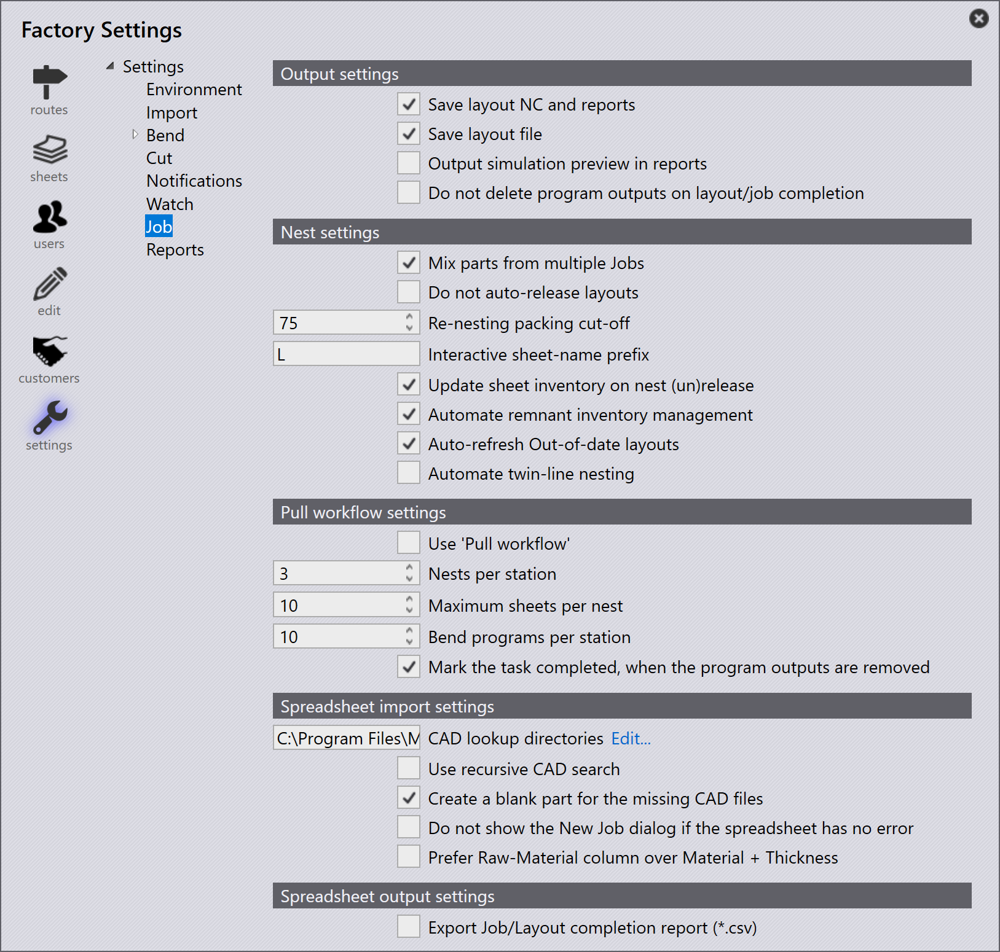

Työ

Output settings
Save layout NC and reports - Ota tämä vaihtoehto käyttöön, jotta sijoittelun NC ja raportit tallennetaan.
Save layout file - Ota tämä vaihtoehto käyttöön, jotta sijoittelu- tiedosto tallennetaan.
Output simulation preview in reports - Ota tämä vaihtoehto käyttöön luodaksesi työstöjen simulaation esikatselun muiden tulosteiden ohella. Tämä on lyhyt GIF-animaatio laser-/liskyöstötyöstöistä.
Do not delete program outputs on layout/job completion - Tämän vaihtoehdon käyttöönotto ohittaa ohjelman tulosteiden poisto-operaation, kun työ/sijoittelu on merkitty valmiiksi.
Nest settings
Mix parts from multiple Jobs - Tukee sekamuotoista nestausta. Useiden töiden osat tulisi nestata yhteen paremman pakkaustehokkuuden saavuttamiseksi.
Do not auto-release layouts - Tämä estää sijoitteluja olemasta käytettävissä tuotantoon, kunnes kaikki sijoittelut ovat vapautetussa tilassa.
Re-nesting packing cut-off - Tätä arvoa käytetään päättämään, pidetäänkö nestattu sijoittelu hyväksyntäjonossa ja nestataanko se uudelleen, kun uusia osia suunnitellaan, vai vapautetaanko ne tuotantoon ja viedaankö niihin liittyvät tulosteet tulostekansioon.
Interactive sheet-name prefix - Tätä osiota käytetään tukemaan interaktiivista nestausta, jossa käyttäjällä on enemmän hallintaa nestattavista osista ja nestaustuloksesta. Käytä nimemiskäytäntöä, joka poikkeaa automaattisesta nestauksesta, interaktiivisesti nestatuille sijoitteluille.
Update sheet inventory on nest (un)release - Jos tämä vaihtoehto on käytössä, levyvarasto päivittyy, kun nestaus lähetetään koneelle. Myös nestauksen palauttaminen koneelta palauttaa levyn varastoon.
Automate remnant inventory management - Kun tämä kytkin on valittu, ohjelmisto automatisoi jäännöslevyvaraston hallinnan. Jos ei valittu, jäännöslevyjen hallinnasta tulee interaktiivista.
Auto-refresh Out-of-date layouts - Kun valittu, ohjelmisto päivittää kaikki osaan liitetyt ui:EGTag.SelectOutOfDate[Out-of-date Layouts] sen leikkausratkaisujen laskennan jälkeen.
Automate twin-line nesting - Valitse tämä vaihtoehto ottaaksesi twin-line-automaation käyttöön.
Pull workflow settings
Use 'Pull workflow' - Tämä vaihtoehto on hyödyllinen käyttäjille, jotka tarvitsevat erittäin itsenäisen suunnittelu- ja nestausjärjestelmän. Kun tämä on käytössä, JFY Plus suunnittelee nestauksen tarpeen mukaan.
Nests per station - Tämä arvo määrittää, kuinka monta sijoittelua asemaa kohden tulisi luoda.
Maximum sheets per nest - Tätä arvoa käytetään ohjaamaan maksimilevymäärää yksilöllistä nestausta kohden. Esimerkiksi jos on työtehtava, jossa on suuri osa (joka täyttää koko levyn) ja jota tarvitaan suurina määrinä (esim. 500) - JFY Plus ei enää luo yhtä nestausta, jossa on 500 kopiota pull-tilassa. Sen sijaan se luo 10 kopiota nestausta kohden, jossa 10 on maksimi.
Bend programs per station - Tämä arvo määrittää, kuinka monta taivutusohjelmaa asemaa kohden tulisi luoda.
Mark the task completed, when the program outputs are removed - Ota tämä vaihtoehto käyttöön, jotta sijoittelu merkitään valmiiksi, kun tulosteet poistetaan kohdetulostekansiosta.
Spreadsheet import settings
CAD lookup directories - JFY Plus yrittää ladata tuodussa CSV-tiedostossa mainitun osamerkinnän osakirjastosta. Jos osaa ei kuitenkaan ole saatavilla osakirjastossa, se yrittää hakea osat hakuhakemistoista tässä valintaikkunassa asetetun hakemistojärjestyksen perusteella.
Use recursive CAD search - Ota tämä vaihtoehto käyttöön, jotta haku toistetaan peräkkäisille tuloksille.
Create a blank part for the missing CAD files - Jos osia ei ole JFY Plus-kirjastossa tai hakuhakemistoissa, JFY Plus luo tyhjän osan näille puuttuville osille.
Do not show New Job dialog if the spreadsheet has no error - Jos CSV-merkinnät ovat virheettömiä eli tiedot eivät ole ristiriidassa tietokannan kanssa tai kaikki kentät on lueteltu oikein, JFY Plus ei näytä työn yleiskatsausikkunaa ja käsittelee työn heti, kun CSV tuodaan tai pudotetaan.
Prefer Raw-Material column over Material + Thickness - Tuetut laskentataulukkotyypit:
-
Pattern 1: PartName, Quantity, DueDate, Priority, RawMaterial
-
Pattern 2: PartName, Quantity, DueDate, Priority, Material, Thickness
-
Pattern 3: PartName, Quantity, DueDate, Priority, Material, Thickness, RawMaterial
Jos tätä vaihtoehtoa ei ole valittu, Pattern 1 katsotaan oletuslaskentataulukko- tyypiksi. Tuemme myös Pattern 3 -tyyppiä siinä tapauksessa, että CSV-muoto on tyyppiä Pattern 3.
Jos tämä vaihtoehto on valittu ja CSV on tyyppiä Pattern 2, niin JFY Plus selvittää raakamateriaalin CSV:n Material- ja Thickness-kentistä.
Spreadsheet output settings
Export Job/Layout completion report (.csv) - Valitse tämä vaihtoehto ottaaksesi CSV-viennin käyttöön, kun sijoittelu tai työ on valmis. Valmiit raportit tallennetaan Reports-kohteeseen, joka on määritetty kohdassa Factory → Settings → Reports -asetukset.